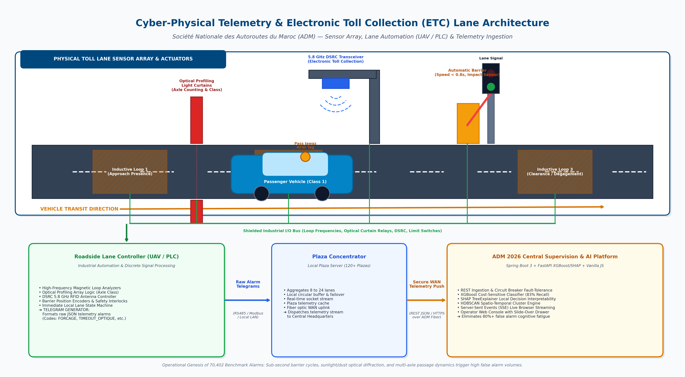

Autoroutes du Maroc · Stage ingénieur logiciel et MLOps
Détection d’anomalies aux péages
J’ai développé un pipeline qui trie les alarmes remontées par les équipements de péage. L’objectif était d’alléger la vérification manuelle tout en maintenant les alertes disponibles si le service de classification tombe en panne.
- Alarmes historiques auditées
- 11 741
- Incidents réels détectés sur le jeu de test
- 88 sur 106
- Latence moyenne sur flux simulé
- 42 ms
Ce que j’ai construit
Spring Boot consomme les événements Kafka, interroge le modèle XGBoost exposé par FastAPI, puis enregistre la décision dans Oracle. J’ai intégré SHAP pour rendre le score lisible par l’opérateur et HDBSCAN pour regrouper les alertes liées à un même incident.
Le moteur distingue trois décisions. Il filtre les fausses alertes à forte confiance, soumet les cas ambigus à l’opérateur et transmet les alarmes jugées réelles. En cas de délai dépassé ou d’indisponibilité de FastAPI, Resilience4j conserve l’alarme dans le circuit de traitement.

Comment j’ai évalué le pipeline
Le rapport de stage décrit un découpage stratifié des 11 741 alarmes historiques auditées. Sur les 2 349 alertes réservées au test, le modèle a repéré 88 des 106 incidents réels, soit 83 % de rappel. La précision pour cette classe était de 19 %, ce qui explique l’intérêt de garder une file de validation humaine pour les cas ambigus.
Pour la latence, j’ai mesuré le parcours complet entre l’émission et l’affichage sur 10 000 événements simulés. Le rapport indique une moyenne de 42 ms et un 95e percentile de 57 ms.